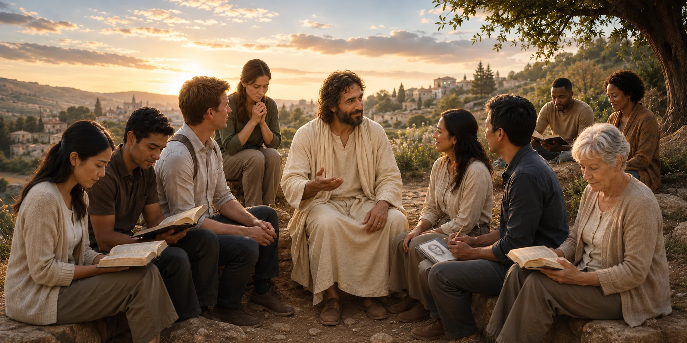

A place to seek, study, and remember Him
Welcome to focusChrist
Explore Jesus Christ through sincere questions, scripture, Latter-day Saint belief, inspirational art, and faithful history. Follow the sources, continue studying, and use the paths that help you draw closer to Him.
Our Purpose
focusChrist exists to help sincere seekers learn of Jesus Christ through clear explanations, scripture, thoughtful study, and direct pathways to authoritative Church resources.

Ask. Seek. Study.
Bring a sincere question and continue the conversation with scripture, sources, and related study paths.
Learn by Topic
Explore permanent answers about Jesus Christ, scripture, prayer, temples, families, Church history, and Latter-day Saint belief.
See and Remember
Use reverent visual art and selected study pages as another way to pause, reflect, and remember the Savior.
Continue exploring
More Ways to Study
Missionary Work
See how Christ's commission grew from the earliest missionaries into a worldwide work of teaching, inviting, and service.
Church History
Study the Restoration and the worldwide history of the Church through the official Church History collection, Saints, verified topic routes, and source-grounded questions.
Pioneer Faith & History
Explore the journey, sacrifices, questions, and faith of Latter-day Saint pioneers through an interactive historical study experience.
Watch & Continue Study
Continue from @theRisen636 into the exact scripture, Answer, Art & Study, or Ask path that matches the message.